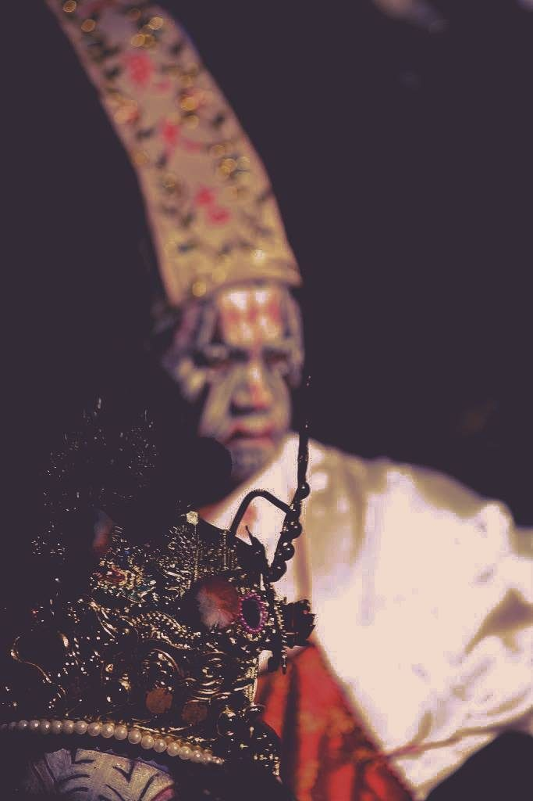

引渡人
2017-09-14

「你們地府也懂學長學帝雉？」
『略懂略懂。』
《引渡人》
跳下公務車，眼前是一片荒僻農田，蛙鳴此起彼落，遠方有幾幢平房，只有一戶在這三更夜裡燈火通明。
老鳥點開「勾魂去誰家」app，「就是前面那一戶。」他將雙手插進口袋悠閒走著，頭也不回，「快啦。」
快，快你去死。
「是！」我夾緊召魂幡，雙手捧缽，加緊腳步跟上，新買的鞋已被泥沙弄髒。
啊，人生。
才剛走近那戶亮著的人家，便傳來一陣陣哀號，緊閉木門上兩尊門神問道，「裡面在生小孩，你們要帶誰？」
「難產啦，兩個都要走。」老鳥出示勾魂令，門神互看一眼，粉臉的再問：「何時？」
「寅時要報到。」老鳥掏出香菸遞出去，「時間還早。」
黑臉的放下兵器接過香菸，伴著斷續的尖叫，他們三人就在前院抽菸幹古，聊得嘴角全波。
好累。我靠著牆角坐下來，好想準時下班，難產的最麻煩，要嘛拖不走，要嘛又說至少讓她餵個奶……屎屎尿尿，唉，好想睡。
晚風有點涼，好像回到小時候跟老媽在院子乘涼的那年……朦朧間，耳邊傳來腳鐐拖行的聲音，「喂！起來！」一隻白色高跟鞋踢著我的鞋，我慢吞吞抬頭，白褲、白衣、白臉，嚇得我差點失禁，「白姐！」
「你們在幹嘛？！到現在副魂還沒勾出來！」黑哥揮著哭喪棒吼道。
我轉頭想求救，只見滿地煙屁股，老鳥跟門神都不見蹤影。
天啊，不會又去找土地公喇賽了吧！
黑哥惡狠狠瞪著我，白姐氣得背上的傘都在發抖，我低頭盯著變得好髒的鞋，這個月獎金又要被扣了。
閃電一般，一聲宏亮的啼哭劃破夜幕，屋內喧騰起來，「恭喜，是個男孩哩！」